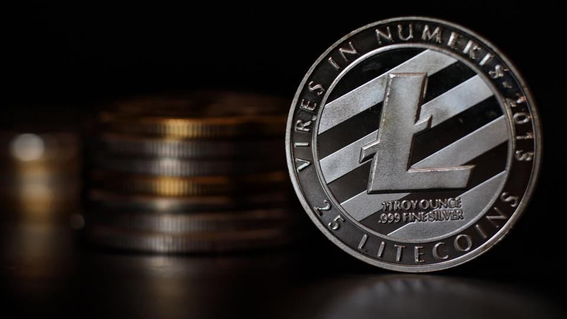
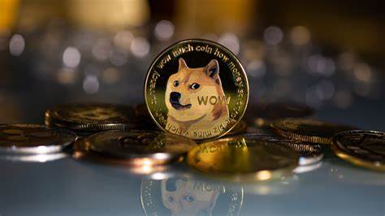

Litecoin

Litecoin, created by Charlie Lee in 2011, is a peer-to-peer cryptocurrency designed as a faster, lower-fee alternative to Bitcoin. It uses the Scrypt hashing algorithm and has a 2.5-minute block generation time, enabling quicker transactions and lower fees. Like Bitcoin, it operates on a decentralized network.
Price:4,973.19 ph
Dogecoin

short description of dogecoin Dogecoin is a cryptocurrency that started as a joke in 2013, inspired by the popular "Doge" meme featuring a Shiba Inu dog. Despite its humorous origins, Dogecoin has gained a large following and is known for its friendly and community-driven nature. It operates on a decentralized network using blockchain technology, similar to Bitcoin, but with faster transaction times and lower fees.
Price:3.81 ph
Toncoin